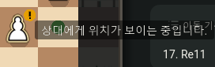
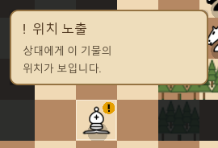
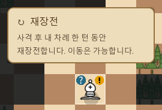

FOGCHESS · STATUS TOOLTIP
커서 위에 떠 있는
불투명한 상태 설명 카드
노출·재장전 설명을 검은 반투명 띠에서 양피지색 카드로 바꿨습니다. 제목과 본문을 나누고 금갈색 테두리를 더했습니다.
변경 전
변경 후 · 실제 호버 화면
위치와 동작
- 아이콘 위로 카드 높이 + 28px만큼 올려 커서 주변을 비웁니다.
- 위쪽 공간이 부족하면 아이콘 아래 38px로 전환하고, 화면 양옆에는 12px 여백을 둡니다.
- 노출 해제·마우스 이탈·드래그 시 기존 상태 판정을 따라 설명이 사라집니다.
- 원래 기물·보드 그림과 규칙은 그대로입니다. 보드 소스에는 사용자 정의 툴팁 연결 함수만 추가했습니다.
재장전 안내에도 적용

재장전 중에도 이동 가능하다는 기존 설명을 유지했습니다.
확인 결과
상태 툴팁 24개 통과 · 보드 UI 128개 통과. 기존 보호 파일 중 327개는 해시가 같으며, 보드 스크립트는 툴팁 연결 함수를 제외하면 백업과 같습니다.
네이티브 Godot에서 실제 호버 이벤트와 흑·백 방향, 상태 해제, 밝은 테마를 확인했습니다. 320px 화면 경계 배치는 계산 검사를 수행했으며 실제 모바일·웹 검증은 하지 않았습니다.
검증 기록 · 변경 내역